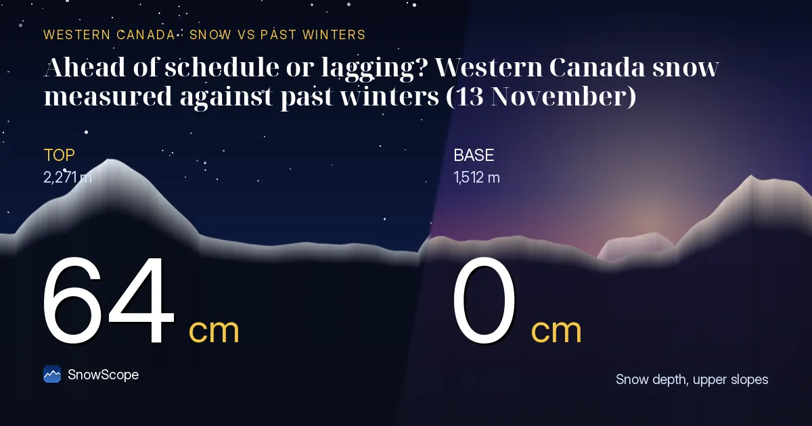
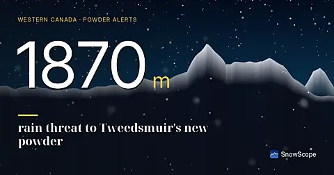
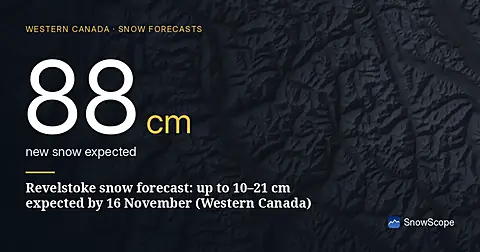

Ahead of schedule or lagging? Western Canada snow measured against past winters (13 November)
A single snowy week can flatter a season, so we weigh today's snow against many past winters in Western Canada. Is the snow store filling as usual? We compared today's snow at 5 resorts in Western Canada with the same date in each of the past 46 winters. 1 of them hold clearly more snow than normal. Snow in the mountains is water held back for spring: what falls now feeds rivers and reservoirs later.
See the live snow forecast for Big White in the SnowScope appSnow depth, powder alerts and the 3D map, free.
Normal, early or late?
At 1,891 m on Big White, today's 43 cm is more than this date brought in 37 of the past 46 winters (usual: 30 cm): a good amount of water is already stored in the snow.
Less water is stored in the snow at Marmot Basin than usual: 20 cm at 2,114 m today, below the usual 79 cm; only 0 of the past 46 winters had less on 13 November.
At 1,369 m on Revelstoke the snow store is behind: 24 cm today against a usual 55 cm. On 13 November, only 5 of the past 46 winters held less.
Tweedsmuir Ski Club holds a normal amount of snow for the date at 1,619 m: 63 cm, more than in 30 of the past 46 winters (usual: 54 cm).
Less water is stored in the snow at Banff Sunshine Village than usual: 3 cm at 2,173 m today, below the usual 29 cm; only 0 of the past 46 winters had less on 13 November.
| Resort | Snow depth | New snow, 72 h | Coming, next days | Top |
|---|---|---|---|---|
| Big White | 86 cm | 0 cm | 16 cm | 2,271 m |
| Marmot Basin | 54 cm | 1 cm | 3 cm | 2,504 m |
| Revelstoke | 53 cm | 4 cm | 21 cm | 2,224 m |
| Tweedsmuir Ski Club | 45 cm | 27 cm | 4 cm | 1,650 m |
| Banff Sunshine Village | 44 cm | 0 cm | 6 cm | 2,686 m |

Against past winters
At about 1,891 m, Big White has 43 cm today; a normal 13 November has 30 cm there.
That is more than in 37 of the 46 past winters on this date.
In past winters the best snow at Big White usually came late March / early April.
An early lead like this matters most for the lower and middle runs, which usually wait until December for this much snow.
Day by day at Big White: Saturday 14 November 4 cm; Sunday 15 November 2 cm; Monday 16 November 10 cm.
Height by height at Big White: 1,512 m 0 cm on the ground, 7 cm more in the next 7 days; 1,891 m 8 cm on the ground, 9 cm more in the next 7 days; 2,271 m 64 cm on the ground, 9 cm more in the next 7 days.
How much snow is lying
The deepest snowpack of this group is at Big White, about 86 cm on the upper slopes; next are Marmot Basin 54 cm and Revelstoke 53 cm.
In total, 201,390 km² of ground in Western Canada holds snow today, with snow at 31 of 57 resorts.
Our estimates the snow over an area; a station measures it at one point. The truth on the slope is usually in between.
The next days in the forecast
By 16 November the forecast adds 21 cm at Revelstoke, 16 cm at Big White and 6 cm at Banff Sunshine Village to the snowpack.
Forecasts a few days ahead can change: look at the map again the day before you travel.
Tips for skiers
- A rule of thumb that is rarely wrong: high and north-facing keeps snow, south-facing loses it first.
- Snow on the map does not mean a resort is open: check lifts and opening dates on the resort's website.
- Early-season snow is thin. Stay on open, groomed pistes: rocks and grass can hide just under the surface.
- Get a powder alert in the SnowScope app to know when Big White gets fresh snow.
About these numbers
Resort snow depths are the deepest snow on the resort's upper slopes on the date shown; they are estimates for an area, not a measurement at one point. Forecasts can change. Always read the official avalanche bulletin before going off-piste.
Official avalanche bulletins: Avalanche Canada
Cite this report
For research, teaching or the press: the numbers and charts are free to reuse under CC BY 4.0 with this citation.
SnowScope (2026), Ahead of schedule or lagging? Western Canada snow measured against past winters (13 November), https://snowscope.app/blog/en/2026/11/western-canada-snow-vs-past-winters-13-november-2026.html, accessed 2026-11-13
SnowScope (Atlas Labs). (2026, November 13). Ahead of schedule or lagging? Western Canada snow measured against past winters (13 November). SnowScope snow reports. https://snowscope.app/blog/en/2026/11/western-canada-snow-vs-past-winters-13-november-2026.html
BibTeX
@misc{snowscope2026westerncanadasnowvspastw,
author = {{SnowScope (Atlas Labs)}},
title = {Ahead of schedule or lagging? Western Canada snow measured against past winters (13 November)},
year = {2026},
month = nov,
howpublished = {\url{https://snowscope.app/blog/en/2026/11/western-canada-snow-vs-past-winters-13-november-2026.html}},
note = {Published 2026-11-13 16:43 UTC; accessed 2026-11-13}
}· CC BY 4.0 · Methods, data and tools →
Big White: snow and temperature by height, this winter vs last (tools) →
Follow Big White
Free: a message when fresh snow is coming, and the forecast every morning.
More snow reports

Between 1,380 m and 3,410 m: that is where our forecast puts the 0 °C level in Western Canada over the next days. In the warmest hours the snow line, …

Freezing level climbs to 1870 m on November 13, bringing rain above Tweedsmuir's 1650 m peak. Fresh powder arrived overnight. Data from November 11.

Revelstoke snow forecast: up to 10–21 cm expected by 16 November (Western Canada). At Whistler Blackcomb, the freezing level reaches 1,500 m to …